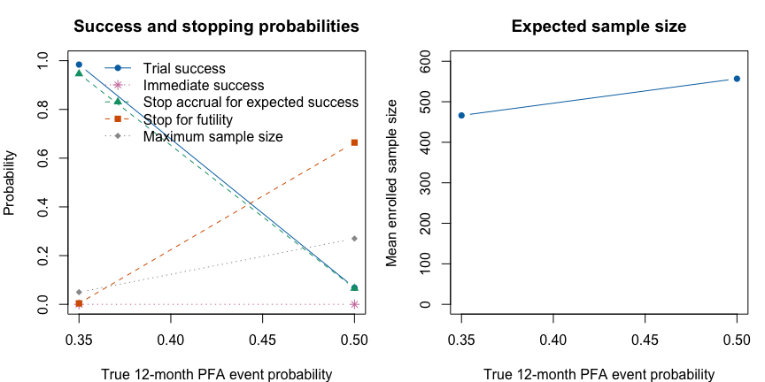
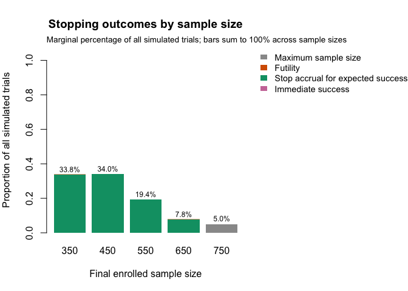
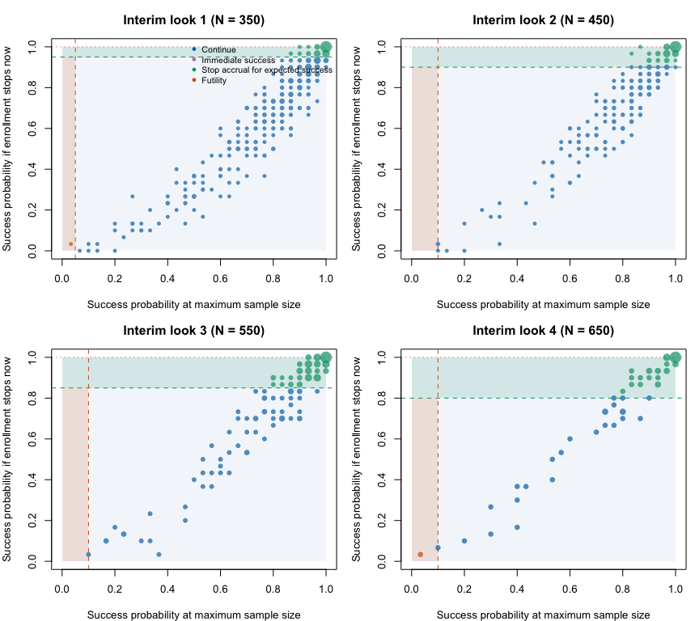

The ADVENT trial is a useful published example of a Goldilocks adaptive sample size design. ADVENT compared pulsed field ablation (PFA) with conventional thermal ablation for patients with drug-resistant paroxysmal atrial fibrillation. It was registered as NCT04612244, its design was published in Heart Rhythm O2 (Reddy et al., 2023), and its primary results were published in The New England Journal of Medicine (Reddy et al., 2023).
The design paper states that the sample size was determined adaptively using a Goldilocks design, citing Broglio et al. (2014). The ADVENT statistical analysis plan (SAP) clarifies that the possible sizes of the modified intent-to-treat (mITT) effectiveness population were 350, 450, 550, 650, and 750. At each enrollment milestone, the trial calculated the predictive probability that the trial would eventually show noninferiority for both primary endpoints. The trial could then stop enrollment for predicted success, stop for futility, or continue to the next milestone.
This vignette uses ADVENT as a worked example for
goldilocks. It focuses on how the published design maps to
package arguments. The goal is not to recreate the sponsor’s full
statistical analysis plan exactly. Some details, including
site-stratified randomization, analysis-population exclusions,
subject-linked missingness, and the joint co-primary endpoint stopping
rule, are simplified here.
ADVENT was a multicenter, prospective, single-blind, randomized controlled noninferiority trial. Randomized subjects were assigned 1:1 to PFA or standard-of-care thermal ablation, where the thermal arm used either radiofrequency ablation or cryoballoon ablation depending on site. The first 1 to 3 subjects at each site were nonrandomized roll-in subjects and are not part of the randomized comparison modeled below.
| Feature | Reported ADVENT design |
|---|---|
| Population | Drug-resistant paroxysmal atrial fibrillation |
| Treatment arm | Pulsed field ablation |
| Control arm | Thermal ablation by radiofrequency or cryoballoon ablation |
| Randomization | 1:1 after nonrandomized roll-in subjects |
| Follow-up | 12 months |
| Adaptive sample sizes | 350, 450, 550, 650, or 750 mITT subjects |
| Primary effectiveness endpoint | Treatment success: acute procedural success and freedom from specified chronic failures through 12 months |
| Primary safety endpoint | Composite device- or procedure-related serious adverse events, including selected acute and chronic events |
The final published randomized cohort included 305 subjects assigned to PFA and 302 assigned to thermal ablation. In the primary results paper, PFA was noninferior to thermal ablation for both primary effectiveness and primary safety.
The published design also included a trial-flow figure. The following diagram recreates the parts of that flow that matter for the package mapping.
In the code below, roll-in subjects and randomized subjects excluded from the analysis population are ignored. The simulation starts directly with the modeled 1:1 analysis population.
The ADVENT design paper includes a flowchart for the adaptive sample size algorithm. The chart below recreates the logic in package terms rather than copying the published image.
The corresponding goldilocks arguments are:
N_total <- 750
interim_look <- c(350, 450, 550, 650)
Sn <- c(0.95, 0.90, 0.85, 0.80)
Fn <- c(0.05, 0.10, 0.10, 0.10)The mapping is direct:
N_total = 750 is the maximum modeled mITT
analysis-population size.interim_look = c(350, 450, 550, 650) supplies the mITT
accrual milestones at which the Goldilocks decision rule is evaluated.
The maximum sample size is not included in
interim_look.Sn contains the published predicted-success thresholds
for sample sizes 350, 450, 550, and 650.Fn contains the published futility thresholds for the
same looks.ADVENT required the predictive probability rule to be favorable for
both co-primary endpoints before enrollment stopped for predicted
success, and unfavorable for either endpoint before stopping for
futility. The current survival_adapt() interface models one
endpoint per run. In this vignette we therefore run the effectiveness
and safety endpoints separately, then explain how those separate
endpoint-specific runs relate to the reported co-primary design.
The SAP allowed up to 900 enrolled subjects to obtain 750 mITT subjects: up to 750 mITT subjects, 105 nonrandomized roll-in subjects, and 45 randomized subjects who did not enter the mITT population. The package examples below start directly with the analysis population and do not simulate roll-ins or post-randomization exclusions.
ADVENT reported the primary effectiveness endpoint as treatment
success at 12 months. The beta-binomial method in
goldilocks is parameterized on the binary event
probability. For the effectiveness endpoint we therefore code the event
as failure by 12 months:
\[ p_{\text{failure}} = 1 - p_{\text{treatment success}}. \]
The design paper reports a target scenario with 65% treatment success in each arm. On the event scale used in the code, that corresponds to a 35% failure probability in each arm.
For the safety endpoint, the event is already an adverse event. The target scenario was an 8% primary safety event rate in each arm.
| Endpoint | Published scale | Code event | Target event probability | Noninferiority margin | Posterior threshold |
|---|---|---|---|---|---|
| Effectiveness | Treatment success by 12 months | Failure to meet treatment success | 0.35 | 0.15 | 0.956 |
| Safety | Primary safety event by 12 months | Primary safety event | 0.08 | 0.08 | 0.966 |
The ADVENT primary analyses used Bayesian beta-binomial endpoint
models with noninformative \(\operatorname{Beta}(0.5, 0.5)\) priors. In
goldilocks, this is specified with:
The survival-prior arguments still appear below because
survival_adapt() uses a time-to-event model to impute
not-yet-observed outcomes. prior_surv controls the
piecewise-exponential Gamma prior during interim prediction, while
prior_surv_final controls it during final multiple
imputation. A length-two vector is broadcast across intervals; a two-row
matrix supplies interval-specific shapes in its first row and rates in
its second.
The effectiveness model partitions follow-up at days 90, 104, 150, and 210. At interim looks its first four hazards use \(\operatorname{Gamma}(0.5, 0.001)\) priors, while the 210–360-day hazard uses the informative \(\operatorname{Gamma}(5, 10000)\) prior because little late follow-up was expected. The final multiple-imputation analysis returns to \(\operatorname{Gamma}(0.5, 0.001)\) in every interval:
prior_surv_effectiveness <- rbind(
shape = c(0.5, 0.5, 0.5, 0.5, 5),
rate = c(0.001, 0.001, 0.001, 0.001, 10000)
)
prior_surv_default <- c(shape = 0.5, rate = 0.001)
prior_surv_final <- prior_surv_defaultThe safety endpoint uses prior_surv_default at both
stages. The distinction from prior_bin is important: the
survival priors control predictive imputation, whereas
prior_bin is the ADVENT-aligned \(\operatorname{Beta}(0.5, 0.5)\) prior for
the completed binary-endpoint analysis. Because the Gamma rates are
expressed in patient-days, all event times, exposure, and cutpoints
supplied below are also in days.
Later follow-up intervals can have no exposure at an early look. The
SAP’s conjugate model then leaves the corresponding hazard governed by
its prior, which is also the package default. The examples set
empty_interval = "prior" explicitly for auditability.
Historical results that used neighboring-interval propagation can be
reproduced with the legacy empty_interval = "propagate"
option.
The SAP reports \(M = 5000\) completed data sets for its predictive-probability and multiple-imputation calculations. The evaluated examples deliberately use fewer imputations: 50 for the single-trial analyses and 30 for the operating- characteristic example. The fuller, unevaluated specification uses \(M = 5000\) to represent the ADVENT setting. Consequently, the numerical results shown here illustrate the analysis but do not reproduce the ADVENT calibration.
The SAP provides the exact default piecewise-exponential generators
used in its operating-characteristic simulations. Because their hazards
are expressed per patient-day and their Gamma prior rates use
patient-day exposure, this vignette uses days as the single
numeric time unit supplied to goldilocks. The SAP
also treats 30 days as one simulation month, so 12 months is represented
as 360 days.
days_per_month <- 30L
follow_up_months <- 12L
end_of_study_day <- follow_up_months * days_per_month
eff_event_cutpoints_day <- c(90, 104, 150, 210)
eff_hazard_per_day <- c(
0.000111670,
0.002197976,
0.003163208,
0.002839089,
0.000494053
)
safety_event_cutpoints_day <- 7
safety_hazard_per_day <- c(0.011137363, 1.53540e-5)
event_free_at_interval_end <- function(hazard, interval_end) {
vapply(seq_along(hazard), function(j) {
cutpoints <- if (j == 1L) NULL else interval_end[seq_len(j - 1L)]
1 - ppwe(
hazard = matrix(hazard[seq_len(j)], nrow = 1L),
cutpoints = cutpoints,
end_of_study = interval_end[j]
)
}, numeric(1))
}
implied_event_free_proportion <- c(
event_free_at_interval_end(
eff_hazard_per_day,
c(eff_event_cutpoints_day, end_of_study_day)
),
event_free_at_interval_end(
safety_hazard_per_day,
c(safety_event_cutpoints_day, end_of_study_day)
)
)
hazard_table <- data.frame(
Endpoint = c(rep("Effectiveness failure", 5), rep("Safety event", 2)),
`Follow-up interval (days)` = c(
"0--<90", "90--<104", "104--<150", "150--<210",
"210--360", "0--<7", "7--360"
),
`Hazard per patient-day` = c(
eff_hazard_per_day,
safety_hazard_per_day
),
`Implied event-free proportion at interval end` =
implied_event_free_proportion,
check.names = FALSE
)
knitr::kable(hazard_table, digits = c(9, 3))| Endpoint | Follow-up interval (days) | Hazard per patient-day | Implied event-free proportion at interval end |
|---|---|---|---|
| Effectiveness failure | 0–<90 | 0.000111670 | 0.990 |
| Effectiveness failure | 90–<104 | 0.002197976 | 0.960 |
| Effectiveness failure | 104–<150 | 0.003163208 | 0.830 |
| Effectiveness failure | 150–<210 | 0.002839089 | 0.700 |
| Effectiveness failure | 210–360 | 0.000494053 | 0.650 |
| Safety event | 0–<7 | 0.011137363 | 0.925 |
| Safety event | 7–360 | 0.000015354 | 0.920 |
The less-than sign marks the exclusive upper boundary of each
nonfinal interval in the SAP’s continuous generating-hazard notation;
the final interval includes the administrative endpoint at day 360. This
notation makes clear that adjacent windows do not overlap. Because event
time is continuous, assigning an exact cut-point to the interval on its
left or right would not change the model probability. When
goldilocks summarizes realized event times, it follows the
survival counting-process convention (start, stop], so an
event recorded exactly at a cut-point is assigned to the interval ending
there.
The following calculation verifies the two final binary event probabilities used by the vignette:
prob_check <- data.frame(
Endpoint = c("Effectiveness failure", "Safety event"),
`SAP target event probability at day 360` = c(0.35, 0.08),
`Calculated event probability at day 360` = c(
ppwe(
hazard = matrix(eff_hazard_per_day, nrow = 1),
end_of_study = end_of_study_day,
cutpoints = eff_event_cutpoints_day
),
ppwe(
hazard = matrix(safety_hazard_per_day, nrow = 1),
end_of_study = end_of_study_day,
cutpoints = safety_event_cutpoints_day
)
),
check.names = FALSE
)
knitr::kable(prob_check, digits = 6)| Endpoint | SAP target event probability at day 360 | Calculated event probability at day 360 |
|---|---|---|
| Effectiveness failure | 0.35 | 0.35 |
| Safety event | 0.08 | 0.08 |
For a piecewise-exponential model with interval hazards \(\lambda_j\) and interval lengths \(d_j\), the cumulative hazard through day 360 is
\[ H(360) = \sum_j \lambda_j d_j, \]
and the implied day-360 event probability is
\[ p = 1 - \exp\{-H(360)\}. \]
To obtain a target event probability \(p^*\) while retaining the relative height of every piece, multiply each hazard by
\[ c = \frac{-\log(1-p^*)}{H(360)}, \qquad \lambda_j^* = c\lambda_j. \]
When the treatment hazard vector is obtained by scaling the control vector this way, the hazard ratio is the same constant \(c\) in every interval. Thus, the operation preserves the piecewise shape and imposes proportional hazards in data generation. We use it for the noninferiority-boundary examples below:
scale_pwe_to_event_probability <- function(
hazard_per_day,
cutpoints_day,
end_day,
target_event_probability
) {
interval_length_day <- diff(c(0, cutpoints_day, end_day))
cumulative_hazard <- sum(hazard_per_day * interval_length_day)
scale <- -log1p(-target_event_probability) / cumulative_hazard
hazard_per_day * scale
}
eff_margin_hazard_per_day <- scale_pwe_to_event_probability(
eff_hazard_per_day,
eff_event_cutpoints_day,
end_of_study_day,
target_event_probability = 0.50
)
safety_margin_hazard_per_day <- scale_pwe_to_event_probability(
safety_hazard_per_day,
safety_event_cutpoints_day,
end_of_study_day,
target_event_probability = 0.16
)Two time clocks remain conceptually distinct even though both are
represented in days. Event cut-points are subject-relative follow-up
times; enrollment-rate change points below are trial-calendar times
measured from first patient in. In addition, the SAP’s event clock
starts on the index-procedure date, whereas goldilocks
starts it at enrollment/randomization. This vignette treats those dates
as coincident and does not model a randomization-to-procedure delay.
For the effectiveness endpoint, success in the code means:
\[ \Pr(p_{\text{PFA failure}} - p_{\text{thermal failure}} < 0.15 \mid \text{data}) > 0.956. \]
This matches the reported 15 percentage point absolute noninferiority
margin for treatment success, after translating success into failure. A
lower failure probability is better, so we use
alternative = "less".
ADVENT used 1:1 randomization stratified by site. The design paper
reports randomly varying permuted block sizes, but the SAP does not
provide the block sizes or the randomization-generation algorithm. The
package can generate blocked 1:1 randomization, but it does not model
site-level stratification or randomly varying block sizes. Here
block = 2 and
rand_ratio = c(control = 1, treatment = 1) retain simple
1:1 balance; they do not reproduce the trial’s full randomization
scheme.
The SAP explicitly designates 5% of subjects as lost to follow-up for safety and 7.5% for effectiveness: the same 5% plus another 2.5% who may be unassessable for effectiveness while remaining assessable for safety. SAP dropout times among designated subjects are uniform over days 0–360, and an event remains observed when it precedes dropout.
The package instead draws independent exponential dropout times for
all subjects. We use prop_loss = 0.075 and
0.05 to match the endpoint-specific probabilities of
potential dropout by day 360, with daily hazards \(-\log(0.925)/360\) and \(-\log(0.95)/360\). This approximates the
SAP’s timing distribution; it does not reproduce its designated-subject
uniform mechanism. Both approaches retain events occurring before
dropout, so the observed proportion censored by dropout can be below the
stated probability. Package dropout counts vary between trials, and
separate endpoint runs cannot preserve the SAP’s shared subject-level 5%
plus nested 2.5% relationship. The subsequently observed proportion not
completing follow-up was approximately 0.04, but that post-trial
quantity is not the design input and need not equal endpoint-specific
missingness.
The SAP reports the expected accrual schedule in subjects per month:
2, 5, 10, 15, 20, 25, and 30 during months 1–7, then 33 per month from
month 8 onward. Accrual is into the primary analysis population. The
source rates remain visibly labeled per month below, but they are
divided by 30 exactly once before being supplied to
goldilocks. Likewise, the calendar-month change points are
converted once to days since first patient in. The SAP does not describe
its individual arrival-time generator; goldilocks uses
these rates in a continuous-time Poisson enrollment process with first
patient in fixed at calendar day 0.
enrollment_rate_per_month <- c(2, 5, 10, 15, 20, 25, 30, 33)
enrollment_rate_change_month <- 1:7
enrollment_rate_per_day <- enrollment_rate_per_month / days_per_month
enrollment_rate_change_day <-
enrollment_rate_change_month * days_per_month
# Independent exponential dropout CDFs at the 360-day per-subject horizon.
effectiveness_prop_loss <- 0.075
safety_prop_loss <- 0.05
enrollment_schedule <- data.frame(
`Trial-calendar interval (months)` = c(
paste("Month", 1:7),
"Month 8 onward"
),
`Trial-calendar interval (days since first patient in)` = c(
paste0(
(0:6) * days_per_month,
"--<",
(1:7) * days_per_month
),
paste0(7 * days_per_month, " onward")
),
`SAP rate (subjects/month)` = enrollment_rate_per_month,
`Rate supplied to goldilocks (subjects/day)` = enrollment_rate_per_day,
check.names = FALSE
)
knitr::kable(enrollment_schedule, digits = 4)| Trial-calendar interval (months) | Trial-calendar interval (days since first patient in) | SAP rate (subjects/month) | Rate supplied to goldilocks (subjects/day) |
|---|---|---|---|
| Month 1 | 0–<30 | 2 | 0.0667 |
| Month 2 | 30–<60 | 5 | 0.1667 |
| Month 3 | 60–<90 | 10 | 0.3333 |
| Month 4 | 90–<120 | 15 | 0.5000 |
| Month 5 | 120–<150 | 20 | 0.6667 |
| Month 6 | 150–<180 | 25 | 0.8333 |
| Month 7 | 180–<210 | 30 | 1.0000 |
| Month 8 onward | 210 onward | 33 | 1.1000 |
Thus, for example, trial-calendar day 210 is the beginning of month 8 and the 33-subject/month rate. It is unrelated to the effectiveness endpoint’s subject-relative cut-point at follow-up day 210. The 360-day follow-up horizon is also per subject, not the total duration of the trial. Accrual speed remains worth sensitivity checking: faster accrual reduces the amount of observed endpoint information available at interim looks.
The following survival_adapt() analysis simulates and
evaluates the effectiveness endpoint for one trial
replicate. It does not estimate operating characteristics over
repeated trials.
set.seed(4601)
# One simulated effectiveness-endpoint trial
advent_effectiveness <- survival_adapt(
hazard_treatment = eff_hazard_per_day,
hazard_control = eff_hazard_per_day,
cutpoints = eff_event_cutpoints_day,
N_total = N_total,
lambda = enrollment_rate_per_day,
lambda_time = enrollment_rate_change_day,
interim_look = interim_look,
end_of_study = end_of_study_day,
prior_surv = prior_surv_effectiveness,
prior_surv_final = prior_surv_final,
prior_bin = prior_bin,
bin_method = "quadrature",
block = 2,
rand_ratio = c(control = 1, treatment = 1),
prop_loss = effectiveness_prop_loss,
alternative = "less",
h0 = 0.15,
Fn = Fn,
Sn = Sn,
prob_ha = 0.956,
N_impute = 50,
empty_interval = "prior",
method = "bayes-bin",
imputed_final = TRUE
)
advent_effectiveness
#> prob_threshold margin alternative N_treatment N_control N_enrolled N_max
#> 1 0.956 0.15 less 225 225 450 750
#> post_prob_ha est_final ppp_success stop_futility stop_immediate_success
#> 1 0.9975355 0.02070796 0.94 0 0
#> stop_expected_success trial_success stopping_reason decision_time
#> 1 1 TRUE expected_success 916.0652
#> accrual_stop_time analysis_ready_time planned_completion_time
#> 1 556.0652 916.0652 916.0652
#> followup_person_time peak_active_followup
#> 1 125118.6 289The principal trial-level quantities are:
N_enrolled: the selected sample size for this simulated
trial.stop_expected_success: whether enrollment stopped
because the current sample size appeared adequate.stop_futility: whether enrollment stopped because
success looked unlikely even at the maximum sample size.est_final: the posterior mean of \(p_{\text{PFA failure}} - p_{\text{thermal
failure}}\).post_prob_ha: the final posterior probability that the
binary endpoint effect is below the noninferiority margin.The safety endpoint uses the same Goldilocks sample-size rule, but changes the event probability, margin, and posterior probability threshold. Success in the code means:
\[ \Pr(p_{\text{PFA safety event}} - p_{\text{thermal safety event}} < 0.08 \mid \text{data}) > 0.966. \]
This survival_adapt() analysis likewise represents
one trial replicate for the safety endpoint.
set.seed(4602)
# One simulated safety-endpoint trial
advent_safety <- survival_adapt(
hazard_treatment = safety_hazard_per_day,
hazard_control = safety_hazard_per_day,
cutpoints = safety_event_cutpoints_day,
N_total = N_total,
lambda = enrollment_rate_per_day,
lambda_time = enrollment_rate_change_day,
interim_look = interim_look,
end_of_study = end_of_study_day,
prior_surv = prior_surv_default,
prior_surv_final = prior_surv_final,
prior_bin = prior_bin,
bin_method = "quadrature",
block = 2,
rand_ratio = c(control = 1, treatment = 1),
prop_loss = safety_prop_loss,
alternative = "less",
h0 = 0.08,
Fn = Fn,
Sn = Sn,
prob_ha = 0.966,
N_impute = 50,
empty_interval = "prior",
method = "bayes-bin",
imputed_final = TRUE
)
advent_safety
#> prob_threshold margin alternative N_treatment N_control N_enrolled N_max
#> 1 0.966 0.08 less 275 275 550 750
#> post_prob_ha est_final ppp_success stop_futility stop_immediate_success
#> 1 0.9962755 0.01797101 0.98 0 0
#> stop_expected_success trial_success stopping_reason decision_time
#> 1 1 TRUE expected_success 972.6321
#> accrual_stop_time analysis_ready_time planned_completion_time
#> 1 612.6321 972.6321 972.6321
#> followup_person_time peak_active_followup
#> 1 179515.4 370In the published ADVENT design, a predicted-success stopping
recommendation required high predictive probability for both endpoints.
A futility recommendation could be triggered by low predictive
probability for either endpoint. The two separate simulations above do
not impose that joint rule. Instead, they show how each
endpoint-specific Bayesian rule maps to
survival_adapt().
For simulations, it is helpful to collect the assumptions that genuinely are common and then add endpoint-specific cut-points and dropout probabilities. Keeping endpoint-specific assumptions separate reduces the risk of applying an effectiveness assumption to the safety endpoint, or vice versa.
advent_common <- list(
N_total = N_total,
lambda = enrollment_rate_per_day,
lambda_time = enrollment_rate_change_day,
interim_look = interim_look,
end_of_study = end_of_study_day,
prior_surv = prior_surv_default,
prior_surv_final = prior_surv_final,
prior_bin = prior_bin,
bin_method = "quadrature",
block = 2,
rand_ratio = c(control = 1, treatment = 1),
alternative = "less",
Fn = Fn,
Sn = Sn,
N_impute = 30,
empty_interval = "prior",
method = "bayes-bin",
imputed_final = TRUE,
ncores = 2
)
advent_effectiveness_args <- modifyList(advent_common, list(
cutpoints = eff_event_cutpoints_day,
prior_surv = prior_surv_effectiveness,
prop_loss = effectiveness_prop_loss
))
advent_safety_args <- modifyList(advent_common, list(
cutpoints = safety_event_cutpoints_day,
prop_loss = safety_prop_loss
))
advent_effectiveness_args
#> $N_total
#> [1] 750
#>
#> $lambda
#> [1] 0.06666667 0.16666667 0.33333333 0.50000000 0.66666667 0.83333333 1.00000000
#> [8] 1.10000000
#>
#> $lambda_time
#> [1] 30 60 90 120 150 180 210
#>
#> $interim_look
#> [1] 350 450 550 650
#>
#> $end_of_study
#> [1] 360
#>
#> $prior_surv
#> [,1] [,2] [,3] [,4] [,5]
#> shape 0.500 0.500 0.500 0.500 5
#> rate 0.001 0.001 0.001 0.001 10000
#>
#> $prior_surv_final
#> shape rate
#> 0.500 0.001
#>
#> $prior_bin
#> [1] 0.5 0.5
#>
#> $bin_method
#> [1] "quadrature"
#>
#> $block
#> [1] 2
#>
#> $rand_ratio
#> control treatment
#> 1 1
#>
#> $alternative
#> [1] "less"
#>
#> $Fn
#> [1] 0.05 0.10 0.10 0.10
#>
#> $Sn
#> [1] 0.95 0.90 0.85 0.80
#>
#> $N_impute
#> [1] 30
#>
#> $empty_interval
#> [1] "prior"
#>
#> $method
#> [1] "bayes-bin"
#>
#> $imputed_final
#> [1] TRUE
#>
#> $ncores
#> [1] 2
#>
#> $cutpoints
#> [1] 90 104 150 210
#>
#> $prop_loss
#> [1] 0.075The endpoint-specific simulations can then reuse the common specification:
set.seed(4610)
eff_target <- do.call(sim_trials, c(
advent_effectiveness_args,
list(
N_trials = 500,
hazard_treatment = eff_hazard_per_day,
hazard_control = eff_hazard_per_day,
h0 = 0.15,
prob_ha = 0.956,
return_trace = TRUE,
seed = 4610
)
))
eff_null_boundary <- do.call(sim_trials, c(
advent_effectiveness_args,
list(
N_trials = 500,
hazard_treatment = eff_margin_hazard_per_day,
hazard_control = eff_hazard_per_day,
h0 = 0.15,
prob_ha = 0.956,
seed = 4611
)
))
oc_small <- summarise_sims(list(
"target: equal 35% failure" = eff_target,
"margin: PFA failure 50%" = eff_null_boundary
))
knitr::kable(
oc_small[c(
"scenario", "n_used", "n_failed", "power", "stop_success",
"stop_futility", "stop_max_N", "mean_N"
)],
digits = 3,
col.names = c(
"Scenario", "Trials used", "Failed runs", "Success probability",
"Expected success stop", "Futility stop", "Maximum N", "Mean N"
)
)| Scenario | Trials used | Failed runs | Success probability | Expected success stop | Futility stop | Maximum N | Mean N |
|---|---|---|---|---|---|---|---|
| margin: PFA failure 50% | 500 | 0 | 0.068 | 0.066 | 0.664 | 0.27 | 556.8 |
| target: equal 35% failure | 500 | 0 | 0.984 | 0.946 | 0.004 | 0.05 | 466.2 |
The table displays selected operating characteristics;
oc_small retains the full summary, including Monte Carlo
uncertainty. Each scenario uses 500 simulated trials and two cores.
These results are illustrative rather than definitive estimates of power
or type I error. A design evaluation should increase
N_trials and N_impute as needed for Monte
Carlo precision and examine sensitivity to accrual, loss to follow-up,
event rates, and the imputation hazard model.
The plots answer complementary design questions. First,
plot_sim_ocs() compares operating characteristics across
the target and noninferiority-margin scenarios. The true PFA event
probability is supplied as the effect scale.
effect_by_scenario <- c(
"target: equal 35% failure" = 0.35,
"margin: PFA failure 50%" = 0.50
)
oc_small$true_pfa_event_probability <- unname(
effect_by_scenario[oc_small$scenario]
)
plot_sim_ocs(
oc_small,
effect = "true_pfa_event_probability",
xlab = "True 12-month PFA event probability"
)
Within the target scenario, plot_sim_stopping() shows
how often each sample size is selected and why enrollment stops.

Because eff_target was simulated with
return_trace = TRUE, its interim decision geometry can also
be inspected. Each displayed panel corresponds to an ADVENT enrollment
milestone reached in at least one simulated trial; larger bubbles
represent predictive-probability pairs reached by more simulated
trials.

The following larger simulation uses the ADVENT values of
N_trials and N_impute. It is provided as a
template and is not evaluated here.
advent_effectiveness_full_args <- modifyList(advent_effectiveness_args, list(
N_impute = 5000,
ncores = 8
))
advent_safety_full_args <- modifyList(advent_safety_args, list(
N_impute = 5000,
ncores = 8
))
eff_target_full <- do.call(sim_trials, c(
advent_effectiveness_full_args,
list(
N_trials = 1000,
hazard_treatment = eff_hazard_per_day,
hazard_control = eff_hazard_per_day,
h0 = 0.15,
prob_ha = 0.956,
seed = 4620
)
))
eff_margin_full <- do.call(sim_trials, c(
advent_effectiveness_full_args,
list(
N_trials = 1000,
hazard_treatment = eff_margin_hazard_per_day,
hazard_control = eff_hazard_per_day,
h0 = 0.15,
prob_ha = 0.956,
seed = 4621
)
))
safety_target_full <- do.call(sim_trials, c(
advent_safety_full_args,
list(
N_trials = 1000,
hazard_treatment = safety_hazard_per_day,
hazard_control = safety_hazard_per_day,
h0 = 0.08,
prob_ha = 0.966,
seed = 4622
)
))
safety_margin_full <- do.call(sim_trials, c(
advent_safety_full_args,
list(
N_trials = 1000,
hazard_treatment = safety_margin_hazard_per_day,
hazard_control = safety_hazard_per_day,
h0 = 0.08,
prob_ha = 0.966,
seed = 4623
)
))
summarise_sims(list(
"effectiveness target" = eff_target_full,
"effectiveness margin" = eff_margin_full,
"safety target" = safety_target_full,
"safety margin" = safety_margin_full
))The “margin” scenarios above set the treatment event probability equal to the control event probability plus the noninferiority margin. They are useful for checking false-positive behavior near the design boundary. They are not the only null scenarios worth studying.
The SAP assessed whether operating characteristics were robust to
several alternative assumptions. In goldilocks notation,
these correspond to:
hazard_control vector over
c(0.40, 0.35, 0.30). These are failure probabilities and
therefore correspond to the SAP’s control success probabilities of 0.60,
0.65, and 0.70. The day-360 event probability implied by the safety
hazard_control vector was varied over
c(0.06, 0.08, 0.10).lambda schedule of
c(2, 5, 10, 10, 15, 15, 20, 25) / 30, with
lambda_time = (1:7) * 30, or a faster schedule of
c(5, 10, 20, 25, 30, 40, 50) / 30, with
lambda_time = (1:6) * 30. Division by 30 converts the SAP’s
subjects/month rates to the subjects/day scale used here.generation_cutpoints = c(90, 100, 200, 300) and both
hazard_treatment and hazard_control set to
c(0.000055695, 0.010034797, 0.001690763, 0.000680535, 0.000573122)
in its equal-arm target scenario.generation_cutpoints = c(90, 120) and both hazard arguments
set to c(0.000569925, 0.007879626, 0.000596254) in its
equal-arm target scenario.generation_cutpoints = c(7, 180) and both hazard arguments
set to c(0.007327613, 0.000122991, 0.0000600610) in its
equal-arm target scenario.The three alternative event-time models deliberately use
data-generating partitions that differ from the principal analysis
partitions. They can be represented by changing
generation_cutpoints and the hazard vectors while retaining
cutpoints and the priors for the principal predictive
model. The SAP also planned an imputation-model sensitivity with six
pieces: day 90 followed by five post-90-day intervals containing
approximately equal event counts, potentially with different cut-points
by arm. goldilocks uses one analysis partition shared by
both arms, so this arm-specific predictive model cannot currently be
represented.
The SAP supplies quantitative reference results based on 10,000 simulated trials per scenario and \(M=5000\) predictive draws or imputations:
| Scenario | Reported probability | Probability meaning | Mean mITT sample size |
|---|---|---|---|
| Target: both endpoints at expected rates | 0.9635 | Joint power | 504 |
| Effectiveness noninferiority boundary | 0.0487 | Effectiveness type I error | 551 |
| Safety noninferiority boundary | 0.0528 | Safety type I error | 457 |
The target row sets the effectiveness hazard_treatment
and hazard_control vectors to imply equal day-360 failure
probabilities of 0.35, and the safety hazard vectors to imply equal
day-360 event probabilities of 0.08; success requires both co-primary
endpoints. At the effectiveness boundary, hazard_treatment
implies a 0.50 failure probability while hazard_control
implies 0.35, and the safety endpoint was assumed always to recommend
stopping for promise and to pass finally. At the safety boundary, the
treatment and control safety hazards imply event probabilities of 0.16
and 0.08, respectively, and effectiveness was treated analogously. These
are external validation targets. The endpoint-separated simulations in
this vignette do not claim to reproduce them.
Broglio KR, Connor JT, Berry SM. Not too big, not too small: a Goldilocks approach to sample size selection. Journal of Biopharmaceutical Statistics. 2014;24(3):685-705. doi:10.1080/10543406.2014.888569.
Reddy VY, Gerstenfeld EP, Natale A, et al. A randomized controlled trial of pulsed field ablation versus standard-of-care ablation for paroxysmal atrial fibrillation: The ADVENT trial rationale and design. Heart Rhythm O2. 2023;4(5):317-328. doi:10.1016/j.hroo.2023.03.001.
Reddy VY, Gerstenfeld EP, Natale A, et al. Pulsed field or conventional thermal ablation for paroxysmal atrial fibrillation. New England Journal of Medicine. 2023;389(18):1660-1671. doi:10.1056/NEJMoa2307291.
ClinicalTrials.gov. A prospective randomized pivotal trial of the FARAPULSE pulsed field ablation system compared with standard of care ablation in patients with paroxysmal atrial fibrillation. NCT04612244.
FARAPULSE, Inc. ADVENT Statistical Analysis Plan. CS0935 Rev C. 12 October 2021. Available from the ClinicalTrials.gov document archive.